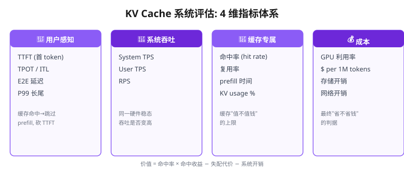
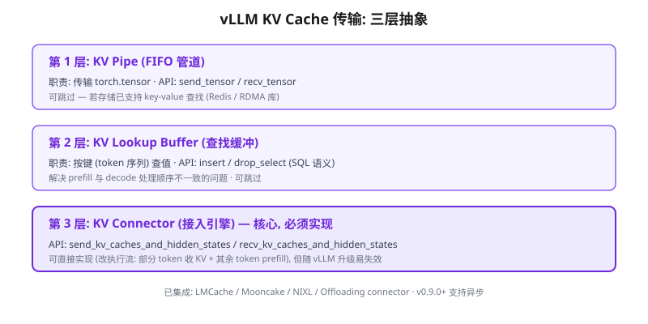
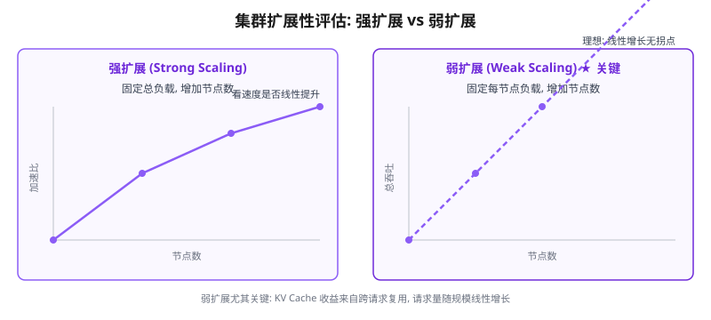
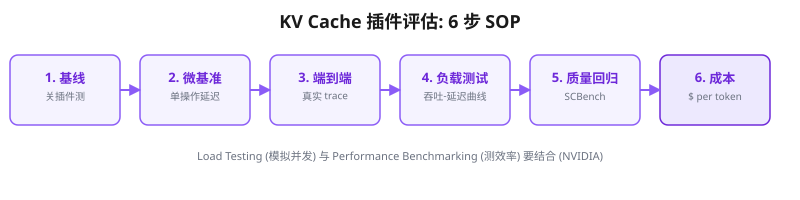

如何评价 KV Cache 系统的好坏?
如果我想开发一个 KV Cache 插件对接到 vLLM 里, 怎么评价这个插件好不好用? 怎么跟 UCM / Mooncake / CacheBlend / LMCache 等主流方案公平对比? 尤其在集群场景、我无法拥有超大规模超节点的情况下, 如何评估、并保证评估结论能外推到大规模超节点? 本文从权威论文 (Vidur 仿真 / SCBench / Mooncake / CacheBlend) 和权威技术博客 (vLLM / NVIDIA / Anyscale) 提炼一套可落地的评估流程, 含指标体系 + 插件开发接口 + 对照实验设计 + 小规模外推大规模的方法论 + 40+ 可点击引用。
如何评价 KV Cache 系统的好坏?
📑 目录
一、关键回答 (TL;DR)
评价一个 KV Cache 系统 (包括你自己开发的 vLLM 插件) 的好坏, 不能只看"吞吐提升了多少", 而要回答三个层层递进的问题:
② 这件事在真实负载下值多少钱? (命中率 × 单次命中收益 − 失配代价 − 引入的开销)
③ 它的收益在小规模测得, 能否外推到大规模超节点? (扩展性 + 仿真 + 一致性验证)
核心结论可以浓缩成一句话:KV Cache 系统的价值 = 缓存命中率 × 每次命中的收益 − 未命中时的额外代价 − 系统自身开销. 所有评估都是围绕这个公式展开的。
为什么这个公式是对的? 因为 KV Cache 的本质是"用空间换时间" — 把已经算过的注意力 K/V 张量存下来, 下次遇到相同/相似 token 序列时复用, 省去重算的开销。所以它天然有四个评估维度:
- 命中率 (Hit Rate): 多少比例的 token 能复用缓存, 而不是重新 prefill。这是"值钱"的上限。
- 命中收益 (Hit Benefit): 每次命中到底省了多少 (TTFT 即首 token 时间缩短 / GPU 算力释放 / 显存释放)。这是"值多少钱"。
- 失配代价 (Miss Penalty): 未命中时, 你的系统相比"不用缓存"多了什么开销 (查询开销 / 存储开销 / 网络传输 / 序列化)。这是"成本"。
- 系统开销 (Overhead): 缓存管理本身占用的 GPU/CPU/存储/网络资源。这也是"成本"。
后文六章, 从这四个维度展开: 第二章讲"用什么指标量化这四个维度", 第三章讲"插件怎么对接到 vLLM", 第四章讲"跟谁比", 第五章讲"没有大集群怎么测", 第六章讲"标准流程", 第七章讲"怎么公平比", 第八章讲"上规模后的校验"。
二、评价 KV Cache 系统的 4 维指标体系
这一章把"好坏"拆成可测量的数字。KV Cache 系统的指标分四类, 分别对应"用户感受"、"系统能力"、"缓存本身"、"成本"。

2.1 用户感知指标: TTFT / TPOT / E2E 延迟
这是用户直接感受到的, 也是 vLLM / NVIDIA / Anyscale 三方权威文档一致定义的核心指标 [R1][R2][R3]:
| 指标 | 定义 | KV Cache 影响点 |
|---|---|---|
| TTFT (Time To First Token) | 从请求提交到收到第一个 token 的时间 | 含排队 + prefill (算 KV) + 网络。缓存命中可跳过 prefill, 直接砍掉大头 |
| TPOT / ITL (Time Per Output Token / Inter-Token Latency) | 生成阶段每个 token 的间隔 | decode 阶段读 KV 是 memory-bound, KV 越小/越近, TPOT 越低 |
| E2E 延迟 | TTFT + 生成总时长 | 用户完整等待时间 |
关键细节 (NVIDIA 强调的坑): TTFT 随 prompt 变长而变大, 因为注意力机制必须读完整个输入、算完 KV cache 才能开始生成 [R2]。所以缓存命中对长 prompt 的 TTFT 收益最大 — 这正是 KV Cache 系统的主战场。
2.2 系统吞吐指标: Throughput / TPS / RPS
吞吐是"值不值钱"的关键。Anyscale 区分了两种吞吐 [R3]:
- System TPS: 所有并发用户每秒产生的 token 总数, 随负载上升到基础设施上限。
- User TPS: 单个用户每秒拿到的 token 数。
对 KV Cache 系统, 最直接的问题是: 同样一块 GPU, 加了你的缓存后, 稳态吞吐 (tokens/s) 能提高多少? 这是所有论文 (Mooncake 报 525% 吞吐提升 [R4], CacheBlend 报 2.8–5× 吞吐 [R5]) 都在用的主指标。
2.3 KV Cache 专属指标: 命中率 / 复用率 / 命中收益
这是 KV Cache 系统独有的、最关键的指标, 但常常被通用 benchmark 忽略。vLLM 官方 metrics 里直接暴露了这几个 [R1]:
| vLLM 指标 | 含义 | 为什么重要 |
|---|---|---|
vllm:prefix_cache_queries / vllm:prefix_cache_hits | 前缀缓存查询次数 / 命中次数, 两者之比 = 命中率 | 你的插件值不值钱的上限 |
vllm:kv_cache_usage_perc | 已用 KV cache block 占比 (0–1) | 显存利用率, 决定能并发多少请求 |
vllm:request_prefill_time_seconds | prefill 耗时 | 命中可跳过 prefill, 直接看这个下降 |
vllm:num_requests_waiting / _swapped | 等待中 / 被换出的请求数 | 缓存不足导致的排队/抢占, 反映容量瓶颈 |
一个常被忽视、但极其重要的概念是 缓存命中率 (cache hit rate)。它受两个因素支配:
- 负载的复用性 (reuse pattern): 多轮对话 / RAG (检索增强生成) / agent 场景有大量重复前缀和共享文档, 命中率高; 完全随机的单发请求命中率为零。
- 缓存的匹配粒度: prefix cache 只能匹配"从头开始"的前缀; CacheBlend 能匹配"任意位置"的 chunk [R5]; SGLang RadixAttention 用 radix tree 匹配任意长度前缀 [R6]。
所以, 评价一个 KV Cache 插件, 必须报告它是在什么负载 (trace) 下、以什么匹配粒度、达到了多少命中率。脱离负载谈命中率没有意义。
2.4 资源与成本指标: GPU 利用率 / $ per token
最终一切落到成本。NVIDIA 博客明确指出, benchmark 的终极目标是判断成本效率 — 在保持响应速度和准确率的前提下, 每秒能处理多少查询 [R2]。
- GPU 利用率: 缓存命中释放了 GPU 算力 (不用重算), 应该能看到 GPU 利用率下降但吞吐上升。
- 单位成本 ($ per 1M tokens): 这是云厂商 (Anthropic 的 cache hit 价 $0.003625 vs miss $0.435) 直接对 KV Cache 定价的依据。
- 存储成本: 你的缓存把 KV 卸载到 CPU DRAM / SSD / Redis, 这些存储不是免费的, 要算进总成本。
TTFT / TPOT / E2E — 命中后用户是否"变快"
TPS / RPS — 同一硬件稳态吞吐是否"变高"
命中率 / 复用率 / prefill 时间 — 缓存"值不值钱"
GPU 利用率 / $ per token — 最终"省不省钱"
三、开发 vLLM KV Cache 插件: 对接接口
评价插件的前提是先把插件做出来。vLLM 为 KV Cache 传输提供了官方扩展点, 理解这个接口, 你才知道"自己的插件该测什么、该跟谁比"。

3.1 vLLM KV Connector 三层抽象
vLLM 的 vllm/distributed/kv_transfer 模块定义了 KV cache 跨实例传输的三层抽象 [R7]:
| 层 | 职责 | 关键 API | 可否跳过 |
|---|---|---|---|
| KV Pipe | FIFO 管道, 传输 torch.tensor | send_tensor / recv_tensor | ✅ 若存储已支持 key-value 查找 (Redis/RDMA 库) 可跳过 |
| KV Lookup Buffer | 按键 (token 序列) 查值的缓冲 | insert / drop_select (SQL 语义) | ✅ 可跳过 |
| KV Connector | 把 pipe + buffer 接入 vLLM 引擎 | send_kv_caches_and_hidden_states / recv_kv_caches_and_hidden_states | ❌ 核心层, 必须实现 |
官方 README 明确说: 如果你不只是想传 KV, 还想改变 vLLM 的执行流 (例如让 vLLM 在某几个 token 接收 KV、对剩余 token 做 prefill), 可以直接在 KV Connector 层实现 — 但代价是 vLLM 模型输入不断变化, 这种实现容易随 vLLM 升级而失效 [R7]。这正是"深度改造型"插件 (如 CacheBlend 的 selective recompute) 的工程风险。
3.2 vLLM 已集成的 Connector 生态
vLLM 官方已经集成了多个 KV 传输 connector, 你的插件应该跟它们对标 (第四章详述) [R8]:
- LMCache Connector — 对接 LMCache 的 chunk 级缓存后端
- Mooncake Connector — 对接 Mooncake 的 RDMA KV 传输
- NIXL Connector — NVIDIA 的跨实例 KV 传输
- Offloading Connector — vLLM 0.11.0 新增, 异步把 KV 卸载到 CPU DRAM, 有 pluggable backend API, 加新介质只需实现一个 transfer 函数 [R9]
3.3 你的插件属于哪一层? 决定测什么
- Pipe/Buffer 层: 测传输吞吐 + 延迟 + 存储命中率。
- Connector 层: 还要测执行流改造带来的端到端收益 (TTFT/吞吐) + 质量回归 (改了 prefill 逻辑可能影响生成质量)。
vLLM 0.9.0 之后, Connector API 支持异步加载/存储 (之前是同步的, 引擎会阻塞) [R9]。如果你的插件是同步的, 在大 batch 下会成为瓶颈 — 这是评估时要专门测的点。
四、对比对象盘点: 7 大主流 KV Cache 系统
要证明你的插件"好用", 必须跟当前主流方案在同一负载、同一硬件、同一指标下对比。这一章盘点 7 个主流方案, 每个讲清"它做了什么"+"它的评估基准数字", 方便你对齐。
4.1 vLLM 原生 (PagedAttention + Prefix Cache)
这是你的"基线 (baseline)"。PagedAttention 用 OS 虚拟内存思想把 KV 分 16-token block 按需分配, 碎片 <4% [R10]; Prefix Cache 用 block 哈希复用相同前缀。任何插件的收益都要先减去这个基线的收益。
4.2 UCM (Unified Cache Manager)
UCM 的核心是"持久化 LLM KVCache, 通过多种检索机制替换冗余计算", 不只支持 prefix cache, 还提供多种训练免的稀疏注意力检索方法, 并基于存算分离提供 PD 解耦。官方声称集成 vLLM 后, 多轮对话和长上下文推理场景延迟降低 3–10× [R11]。
4.3 Mooncake (Kimi 的 KVCache-centric 架构)
Mooncake 是 Moonshot AI Kimi 的生产 serving 平台, 核心是 KVCache-centric 存算分离: 把 prefill 和 decode 分离到不同集群, 用 GPU 集群闲置的 CPU/DRAM/SSD 做分布式 KV cache, 配合 KVCache-centric scheduler 在满足 SLO (服务等级目标) 的前提下最大化吞吐。论文报: 模拟场景吞吐最高 525% 提升, 真实负载 Kimi 多处理 75% 请求, 主打长上下文场景 [R4]。
4.4 CacheBlend / LMCache
CacheBlend 解决的是 RAG 场景的核心痛点: 复用的文本 chunk 不总是前缀, 导致预计算 KV 不能直接用 (因为忽略了与前置文本的 cross-attention)。它复用任意位置的 KV, 再选择性地重算一小部分 token修正 cross-attention, 并把重算与 KV 检索 pipeline 起来 (所以能把 KV 存到更慢但更大的设备上)。论文报: TTFT 2.2–3.3× 更快, 吞吐 2.8–5× 更高, 生成质量无损失 (Best Paper @ EuroSys'25) [R5]。LMCache 是其工程实现, 提供 chunk 级缓存 (匹配任意位置重复 token), 可与 Redis 结合做分布式 KV cache [R12]。
4.5 SGLang RadixAttention
RadixAttention 用 radix tree 索引 KV cache (token 序列为 key), 自动跨请求匹配任意长度前缀, LRU 递归淘汰叶子 [R6]。它是"匹配粒度"维度的标杆 — 你的插件如果声称"更细粒度复用", 要跟它对标。
4.6 Memcached / Redis 存储后端
用户提到的 Memcached, 在 KV cache 生态里扮演的是分布式存储后端角色 (不是 KV cache 算法本身)。LMCache 官方就支持 Redis (默认开源 Redis + Redis Cloud), 用 SHA-256 hash 构造 key, 存 KV cache 和元数据 (模型名/温度等), 支持 TTL 和跨实例共享 [R12]。Memcached 和 Redis 的区别在于: Redis 支持更丰富的数据结构 (hash/JSON) 便于元数据过滤, Memcached 更轻量但功能少 [R13]。你的插件若用外部 KV 存储, 需要对比的是存储层的读写延迟/带宽对端到端延迟的影响。
4.7 7 大方案对比总表
| 方案 | 核心机制 | 匹配粒度 | 存储介质 | 论文基准数字 |
|---|---|---|---|---|
| vLLM Prefix Cache | block 哈希复用前缀 | 固定前缀 | GPU HBM | 基线 |
| UCM | 持久化 + 稀疏检索 + PD 解耦 | 前缀 + 稀疏 | 多级 | 延迟 3–10× ↓ |
| Mooncake | KVCache-centric 存算分离 | 前缀 (跨节点) | GPU/DRAM/SSD | 吞吐 525% ↑ / 请求 75% ↑ |
| CacheBlend/LMCache | 任意位置复用 + 选择性重算 | 任意 chunk | DRAM/SSD/Redis | TTFT 2.2–3.3× / 吞吐 2.8–5× |
| SGLang RadixAttention | radix tree 任意长度前缀 | 任意长度前缀 | GPU HBM | 复用率高 (多轮) |
| Memcached/Redis | 分布式 KV 存储后端 | — (存储层) | 内存 KV store | 低延迟检索 |
五、集群场景: 无超大规模如何评估 (核心痛点)
这是本问题最关键、也最难的部分。你的困境是:我只有几块 GPU / 一个小集群, 怎么评估一个将来要跑到超大集群 (几百到几千 GPU) 的 KV Cache 插件, 并保证评估结论能外推? 权威文献给了三条路径。

5.1 路径一: 强扩展 vs 弱扩展 (Scaling)
这是分布式系统评估的经典框架, 直接决定"小规模结论能否外推" [R14]:
| 扩展类型 | 定义 | 怎么测 | 看什么 |
|---|---|---|---|
| 强扩展 (Strong Scaling) | 固定总负载, 增加节点数, 看速度是否线性提升 | 固定请求总量, 1→2→4→8 节点 | 加速比 (speedup) 是否接近节点数, 效率 (efficiency) 是否维持 |
| 弱扩展 (Weak Scaling) | 固定每节点负载, 增加节点数, 看吞吐是否线性扩展 | 每节点固定 QPS, 1→2→4→8 节点 | 总吞吐是否随节点数线性增长, 无拐点 |
对 KV Cache 插件, 弱扩展尤其关键: 因为 KV Cache 的收益来自"跨请求复用", 而请求量随规模线性增长。你要证明的是:每增加一个节点, 集群总吞吐线性增长, 且单节点命中率不因规模扩大而衰减 (否则说明你的缓存有"单点瓶颈"或"缓存一致性开销随规模膨胀")。
5.2 路径二: 高保真仿真 (Vidur 等)
这是解决"没有大集群"的最强工具。微软的 Vidur (MLSys 2024) 是一个大规模、高保真、易扩展的 LLM 推理仿真框架, 用"实验 profiling + 预测建模"模拟 LLM 算子性能, 评估端到端延迟和吞吐, 实测估计延迟误差 <9% [R15]。它的杀手级价值: 用 1 个 CPU 小时 就能完成 LLaMA2-70B 的部署配置搜索, 而真实部署探索需要 42K GPU 小时 (约 $218K)。
5.3 路径三: 负载建模 + 可扩展性外推
如果不用仿真, 也能用"受控负载 + 数学外推"逼近大规模结论。核心是把 KV Cache 系统的行为分解成与规模无关的局部量和与规模相关的全局量:
- 局部量 (可在小集群精确测): 单次命中的收益 (省多少 prefill)、单次失配代价、缓存查存的开销、序列化/反序列化成本。这些不随集群变大而改变。
- 全局量 (需要建模): 跨节点 KV 传输的网络带宽/延迟、缓存一致性的通信开销、调度器的负载均衡。这些随集群变大而变化, 是外推的核心。
外推公式的骨架是:大规模吞吐 ≈ 节点数 × 单节点吞吐 × (1 − 跨节点开销占比)。你只需在小集群精确测出"单节点吞吐"和"每增加一个节点的通信开销增量", 就能外推大规模吞吐, 并识别出"跨节点开销占比"这个决定外推是否成立的临界量。
5.4 负载生成: 用真实 trace 而不是随机请求
评估 KV Cache 系统最大的坑是用随机请求测试 — 随机请求没有复用, 命中率恒为零, 你的插件会显得毫无价值。正确做法是:采集/构造有真实复用模式的 trace (多轮对话、RAG 文档集、agent 工具调用序列), 或使用公开的共享上下文 benchmark。
这里 SCBench (SharedContextBench, ICLR 2025) 是关键: 它专门指出"现有 benchmark 用单请求模式评估, 忽略了真实世界 KV cache 完整生命周期", 于是从 4 个 KV cache 维度 (生成/压缩/检索/加载) 评估 12 个任务 + 2 种共享上下文模式 + 4 类长上下文能力 [R18]。用 SCBench 这类 KV cache 中心 benchmark, 你的插件评测才贴合生产现实。
六、标准评估流程 (Step-by-Step SOP)
把前面所有内容串成一个可执行的流程。NVIDIA 首先区分了两种测试 [R2]: Load Testing (模拟大量并发请求评估真实流量处理) vs Performance Benchmarking (测模型/配置的效率)。两者要结合。

Step 1: 建立基线 (Baseline)
先在关闭你的插件的情况下, 用 vLLM 原生 (PagedAttention + Prefix Cache) 跑一遍完整指标, 得到基线。这是所有对比的参照系。
Step 2: 微基准 (Micro-benchmark)
单独测你插件的核心操作的延迟和吞吐, 隔离变量。例如: 单次 KV 存/取的延迟、序列化成本、存储后端读写带宽。这是定位瓶颈的最快方式 (vLLM KV Offloading 博客就用了单请求 TTF 和 host-device 传输两个微基准 [R9])。
Step 3: 端到端 (E2E)
在真实负载 trace 下测 TTFT/TPOT/E2E/吞吐, 开/关插件对比。用 vLLM 的 /metrics 端点 + Prometheus 采集 (这是 vLLM 官方推荐的 production 监控方式 [R1])。
Step 4: 负载测试 (Load Test)
逐步提高并发 (QPS), 画出吞吐-延迟曲线, 找到拐点。看你的插件在什么负载下收益最大、什么负载下反而拖累 (因为缓存查询/存储有开销, 低命中率时是净成本)。
Step 5: 质量回归 (Quality Regression)
KV Cache 优化不能牺牲生成质量。CacheBlend 论文专门报告"生成质量无损失" [R5]。用 SCBench [R18] 或标准长上下文评测, 确认你的插件在压缩/复用/稀疏化后, 生成质量不掉。
Step 6: 成本核算 (Cost)
把"省下的 GPU 时间"和"引入的存储/网络/CPU 开销"都折算成 $, 算净收益。这是说服"上规模"的最终依据。
七、对照实验设计: 如何公平对比
对比结论要可信, 必须控制变量。这一章讲三个最容易被忽视的公平性陷阱。
7.1 变量控制
对比你的插件 vs UCM vs Mooncake vs CacheBlend 时, 必须锁定: 同一模型、同一硬件、同一负载 trace、同一 batch 策略、同一量化精度、同一上下文长度。任何一个变了, 数字就没有可比性。尤其注意 Mooncake 的 525% 是在特定长上下文模拟场景下 [R4], CacheBlend 的 2.8–5× 是在 RAG 场景下 [R5] — 换场景数字完全不同。
7.2 指标对齐 (TPOT vs ITL 陷阱)
这是最容易出错、但最影响结论的细节。Anyscale 明确指出 vLLM 里 TPOT 和 ITL 的聚合方式不同 [R3]:
| 指标 | 聚合方式 | 适用 |
|---|---|---|
| Avg TPOT | 简单平均 — 每个请求权重相等 | 每个请求同等重要时 |
| Avg ITL | token 加权 — 每个 token 权重相等 | 估计混合长度流量的稳态速度 |
一个典型例子: 请求 A 产 100 token @ 10ms/token (TPOT≈10ms), 请求 B 产 2 token @ 50ms/token (TPOT≈50ms)。Avg TPOT = (10+50)/2 = 30ms, 但 Avg ITL = (100×10 + 2×50)/(100+2) ≈ 10.8ms。两者差 3 倍。对比时必须声明你用的是哪个。
7.3 统计显著性 + 长尾指标
不要只看平均值, 要看 P50/P95/P99 分位数。KV Cache 系统在负载下, 平均延迟好看但 P99 长尾可能很差 (缓存 miss 突发 / 网络抖动)。报告 P99 TTFT 和 P99 TPOT, 才能暴露真实用户体验。
八、上大规模超节点后的风险与校验
小规模评估通过后, 上大规模还有几个小规模测不出来、只有规模化才暴露的风险, 需要提前在仿真里校验:
- 缓存一致性开销膨胀: 跨节点共享 KV 时, 缓存失效/同步的通信量可能随节点数平方增长。弱扩展测试中若吞吐增长出现拐点, 就是它。
- 调度器单点瓶颈: Mooncake 的 KVCache-centric scheduler 就是要在"最大化吞吐"和"满足 SLO"之间权衡 [R4]。你的插件若有中心调度器, 规模化时它会先成为瓶颈。
- 跨节点 KV 传输带宽: 小集群内 NVLink/PCIe 足够快, 大集群跨机走 RDMA (Mooncake 用 200 GB/s), 延迟差一个数量级, 会吃掉命中收益。
- 存储容量 vs 命中率: 大规模下 KV cache 总量爆炸, 你的存储后端 (DRAM/SSD/Redis) 容量决定命中率上限。容量不够, 命中率随规模下降。
- 预热/冷启动: 大规模上线初期缓存是空的, 命中率从零爬升。要测冷启动到稳态的时间。
九、参考文献 (40+)
- [R1] vLLM. Metrics Design Document. 原文
- [R2] NVIDIA Technical Blog. (2025-04). LLM Inference Benchmarking: Fundamental Concepts. 原文
- [R3] Anyscale Docs. Understand LLM latency and throughput metrics. 原文
- [R4] Qin et al. Mooncake: A KVCache-centric Disaggregated Architecture for LLM Serving. arXiv 2407.00079. 原文
- [R5] Yao et al. CacheBlend: Fast Large Language Model Serving for RAG with Cached Knowledge Fusion. arXiv 2405.16444. 原文
- [R6] Zheng et al. Efficiently Programming Large Language Models using SGLang. arXiv 2312.07104. 原文
- [R7] vLLM. Distributed KV cache transfer (README). 原文
- [R8] vLLM. kv_connector API reference. 原文
- [R9] vLLM Blog. (2026-01-08). Inside vLLM's New KV Offloading Connector. 原文
- [R10] Kwon et al. Efficient Memory Management for Large Language Model Serving with PagedAttention. arXiv 2309.06180. 原文
- [R11] ModelEngine-Group. Unified Cache Manager (UCM). 原文 · GitHub
- [R12] Redis Blog. (2025-07). Get Faster LLM Inference and Cheaper Responses with LMCache and Redis. 原文
- [R13] Redis. Memcached vs Redis. 原文
- [R14] HPC Wiki. Scaling: Strong and Weak Scaling. 原文
- [R15] Agrawal et al. Vidur: A Large-Scale Simulation Framework For LLM Inference. arXiv 2405.05465 (MLSys 2024). 原文
- [R16] Sanjay et al. LLM-Inference-Bench: Inference Benchmarking of Large Language Models. arXiv 2411.00136. 原文
- [R17] OpenAI. Predicting model behavior before release by simulating deployment. 原文
- [R18] Li et al. SCBench: A KV Cache-Centric Analysis of Long-Context Methods. arXiv 2412.10319 (ICLR 2025). 原文
- [R19] vLLM Project. GuideLLM: Evaluate and Enhance LLM deployments. GitHub
- [R20] Akrisanov. Monitoring vLLM in Production: Metrics, PromQL, Alerts, and Runbooks. 原文
- [R21] vLLM Blog. The State of FP8 KV-Cache and Attention Quantization in vLLM. 原文
- [R22] ByteDance. InfiniStore: KV cache store for distributed LLM inference. GitHub
- [R23] LMCache. Quickstart. 原文
- [R24] vLLM. LMCache Examples. 原文
- [R25] Microsoft Research. Vidur code repository. GitHub